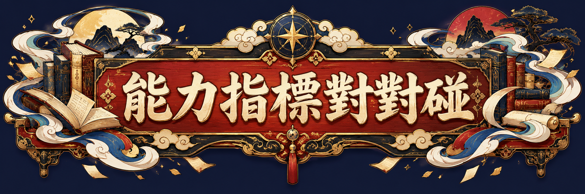

請閱讀書籍中的教學任務，再選擇最主要的能力。
單元藏書閣12 TEACHING MISSIONS
師資生討論提示與教材說明
本遊戲以「解題、推理、表徵、溝通」作為自訂教學能力分類，並非正式課綱條目或代碼。每類各有 3 個單元任務；配對依據是任務所強調的主要表現，並非認定一個單元只能培養一種能力。題材取自國小數學常見內容，供師資生分析教學使用。
討論：若把任務要求改成「請說明理由」，主要能力會改變嗎？如何蒐集學生實際展現能力的證據？校園與六朝服飾為藝術化想像，非歷史或建築考據圖。

以單元為起點，讀懂教學任務背後的數學能力。
本遊戲以「解題、推理、表徵、溝通」作為自訂教學能力分類，並非正式課綱條目或代碼。每類各有 3 個單元任務；配對依據是任務所強調的主要表現，並非認定一個單元只能培養一種能力。題材取自國小數學常見內容，供師資生分析教學使用。
討論：若把任務要求改成「請說明理由」，主要能力會改變嗎？如何蒐集學生實際展現能力的證據？校園與六朝服飾為藝術化想像，非歷史或建築考據圖。